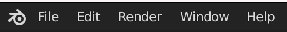
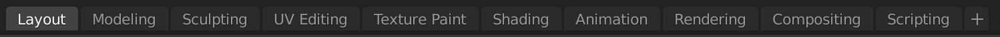
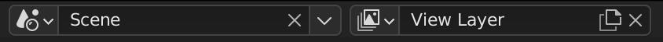

Topbar¶
Menus¶

Menu Blender¶
- Splash Screen
Mở Splash Screen.
- Giới thiệu Blender
Mở một menu hiển thị các thông tin sau về Blender:
Version: Phiên bản Blender.
Date: Ngày Blender được biên dịch.
Hash: Git Hash của bản build. Thông tin này có thể hữu ích để đưa cho bộ phận hỗ trợ khi chẩn đoán sự cố.
Branch: Tên branch (tùy chọn).
Windowing Environment: Trên Linux, mục này sẽ hiển thị Wayland hoặc X11 tùy thuộc vào môi trường cửa sổ mà Blender đang chạy.
Donate: Mở trang web Quỹ phát triển của Blender.
What's New: Mở ghi chú phát hành mới nhất.
Credits: Mở trang web đóng góp.
License: Mở trang web giấy phép.
Blender Store: Mở trang web Blender Store.
Blender Website: Mở trang web chính của Blender.
- Install Application Template
Cài đặt một application template mới.
Menu File¶
Các tùy chọn để quản lý file là:
- New Ctrl-N
Xóa scene hiện tại và tải application template được chọn.
- Open Ctrl-O
Mở một blend-file.
- Open Recent Shift-Ctrl-O
Hiển thị danh sách các blend-file mở gần đây nhất. Di chuột tới các mục sẽ hiện ảnh xem trước và thông tin về blend-file. Chọn bất kỳ tên file nào trong danh sách để mở blend-file đó.
- Clear Recent Files List
Xóa các mục khỏi danh sách file gần đây.
- Revert
Mở lại file hiện tại về phiên bản lưu cuối cùng.
- Recover
Các tùy chọn khôi phục blend-file sau khi vô tình đóng Blender hoặc gặp sự cố sập. Xem:
- Save Ctrl-S
Lưu blend-file hiện tại.
- Save As... Shift-Ctrl-S
Mở File Browser để chỉ định tên file và vị trí lưu.
- Save Copy...
Lưu một bản sao của file hiện tại.
- Save Incremental Ctrl-Alt-S
Lưu file Blender hiện tại với tên được tăng số, không ghi đè lên bất kỳ file nào hiện có.
- Link...
Liên kết dữ liệu từ một blend-file bên ngoài (library) vào file hiện tại. Việc chỉnh sửa dữ liệu đó chỉ có thể thực hiện trong library bên ngoài. Link và Append dùng để chỉ tải những phần được chọn từ file khác. Xem Linked Libraries.
- Append...
Nối dữ liệu từ một blend-file bên ngoài vào file hiện tại. Dữ liệu mới được sao chép từ file bên ngoài và hoàn toàn không liên kết với file đó nữa.
- Data Previews
Công cụ để quản lý xem trước data-block.
- Import
Blender có thể sử dụng thông tin được lưu trong nhiều loại file định dạng khác nhau do các chương trình đồ họa khác tạo ra. Xem Import/Export.
- Export
Thông thường bạn lưu công việc của mình trong một blend-file, nhưng bạn có thể xuất một phần hoặc toàn bộ công việc sang định dạng mà các chương trình đồ họa khác xử lý được. Xem Import/Export.
- Export All Collections
Gọi tất cả bộ xuất đã cấu hình cho mọi collection.
- External Data
Dữ liệu bên ngoài, như ảnh texture và các tài nguyên khác, có thể được lưu bên trong blend-file (đóng gói) hoặc dạng file riêng (giải đóng gói). Blender theo dõi mọi tài nguyên chưa đóng gói qua đường dẫn tương đối hoặc tuyệt đối. Xem đóng gói hoặc giải đóng gói dữ liệu bên ngoài.
- Automatically Pack Resources
Đóng gói tất cả file bên ngoài đang dùng vào blend-file và tự động đóng gọi mọi file được thêm về sau. Bỏ chọn tùy chọn này chỉ dừng việc đóng gói tự động cho file mới; nó không giải đóng gói các file đã đóng gói sẵn.
- Pack Resources
Đóng gói tất cả file bên ngoài đang dùng vào blend-file. Sau khi chạy operator này và lưu blend-file, các file bên ngoài sẽ không còn được dùng nữa -- mọi thay đổi trong chúng sẽ không còn được phản ánh vào blend-file, và bạn có thể tự do di chuyển hoặc xóa chúng.
- Unpack Resources
Xuất các file trước đây đã đóng gói trở lại thành file bên ngoài. Bạn có thể chọn tái sử dụng các file bên ngoài hiện có hoặc ghi đè lên chúng.
- Pack Linked Libraries
Đóng gói các data-block được liên kết từ blend-file bên ngoài vào file hiện tại.
- Unpack Linked Libraries
Xuất các data-block trước đây đã đóng gói trở lại thành blend-file bên ngoài. Các blend-file hiện có sẽ bị ghi đè.
- Make Paths Relative
Đặt mọi đường dẫn tới file bên ngoài thành tương đối với blend-file hiện tại.
- Make Paths Absolute
Đặt mọi đường dẫn tới file bên ngoài thành tuyệt đối (= đường dẫn đầy đủ từ gốc của hệ thống).
- Report Missing Files
Tùy chọn này hữu ích để kiểm tra xem có liên kết nào tới file chưa đóng gói không còn tồn tại hay không. Sau khi chọn tùy chọn này, một thông báo cảnh báo sẽ xuất hiện ở header của Info editor. Nếu không có cảnh báo nào, tức là không thiếu file bên ngoài nào.
- Find Missing Files
Trong trường hợp blend-file có liên kết bị đứt, tính năng này có thể giúp bạn khắc phục. File Browser sẽ hiện ra. Chọn thư mục mong muốn (hoặc một file trong thư mục đó), và một lượt tìm kiếm sẽ được thực hiện trong đó, đệ quy vào mọi thư mục con. Mọi file bị thiếu tìm thấy trong lượt tìm sẽ được khôi phục. Việc khôi phục này sẽ dùng đường dẫn tuyệt đối, nên nếu bạn muốn đường dẫn tương đối thì cần chọn Make Paths Relative.
Ghi chú
Các file đã khôi phục có thể cần được tải lại. Bạn có thể làm từng file một, hoặc lưu blend-file rồi tải lại nó, để mọi file bên ngoài được tải lại cùng lúc.
- Clean Up
- Purge Unused Data
Mở một hộp thoại để xóa các data-block không dùng khỏi blend-file hiện tại hoặc bất kỳ Linked Data nào (không thể hoàn tác). Xem Outliner để biết thêm thông tin.
- Manage Unused Data
Mở một cửa sổ pop-up của Outliner ở chế độ Unused Data, liệt kê các data-block và dữ liệu khác không được dùng và/hoặc sẽ bị mất khi file được tải lại. Nó bao gồm cả các data-block chỉ có fake user. Bạn có thể thêm/xóa Fake User bằng cách nhấp vào biểu tượng gạch chéo/dấu tick ở bên phải Outliner.
- Defaults
Menu này quản lý startup file, dùng để lưu scene, workspace và giao diện mặc định hiển thị khi tạo file mới.
Ban đầu nó chứa startup scene đi kèm Blender. Bạn có thể thay thế bằng thiết lập tùy chỉnh riêng của mình.
- Save Startup File
Lưu blend-file hiện tại làm startup file.
- Load Factory Settings
Khôi phục startup file và preferences mặc định.
Khi một Application Template đang được dùng, các operator sau sẽ được hiển thị:
- Load Factory Blender Settings
Tải cài đặt mặc định về cài đặt Blender gốc, không kèm các thay đổi từ application template hiện tại.
- Load Factory (Application Template Name) Settings
Tải cài đặt mặc định về application template gốc.
Xem thêm
- Quit Ctrl-Q
Đóng Blender. Scene hiện tại được lưu vào một file tên "quit.blend" trong thư mục tạm của Blender (có thể tìm thấy trong tab "File Paths" của Preferences).
Menu Edit¶
- Undo, Redo, Undo History
Xem Undo & Redo.
- Adjust Last Operation, Repeat Last, Repeat History
Xem Undo & Redo.
- Menu Search
Tìm menu theo tên.
- Operator Search
Thực thi một operator theo tên (chỉ khi bật Developer Extras).
- Rename Active Item
Đổi tên object hoặc node đang hoạt động; xem công cụ Rename để biết thêm thông tin.
- Batch Rename
Đổi tên nhiều kiểu dữ liệu cùng lúc; xem công cụ Batch Rename để biết thêm thông tin.
- Lock Object Modes
Ngăn chọn các object đang ở chế độ khác với chế độ hiện tại.
Ghi chú
Tùy chọn này có thể ngăn việc đổi chế độ vô tình, chẳng hạn khi bạn đang cố chọn một bone trong Pose Mode để animate nó, nhưng lại nhấp vào một phần phông nền (bình thường sẽ chọn phần đó và chuyển sang Object Mode).
Bạn có thể muốn tắt Lock Object Modes chẳng hạn khi weight các object đã rig, hoặc khi sculpt/paint mà bạn cố ý muốn chuyển qua lại giữa các object ở các chế độ khác nhau.
- Preferences Ctrl-Comma
Menu Render¶
- Render Image F12
Render scene đang hoạt động tại frame hiện tại.
- Render Animation Ctrl-F12
Render animation của scene đang hoạt động.
Xem thêm
Xem Render animation để biết chi tiết.
- Render Sequencer Image Alt-F12
Nếu tồn tại một Sequencer Scene khác với scene đang hoạt động, sẽ render scene đó thay thế.
- Render Sequencer Animation Ctrl-Alt-F12
Render animation của Sequencer Scene.
Ghi chú
Cả hai tùy chọn render sequencer đều tự động bật công tắc Show Sequencer Scene trong Render Result của image editor sau khi render.
- Render Audio
Trộn audio của scene thành một file âm thanh.
Xem thêm
Xem Render audio để biết chi tiết.
- View Render F11
Hiển thị cửa sổ Render. (Nhấn lần nữa để quay lại cửa sổ chính của Blender.)
- View Animation Ctrl-F11
Phát lại animation đã render trong một trình phát riêng.
Xem thêm
Xem trình phát animation để biết chi tiết.
Xem Preferences để chọn một trình phát animation khác trình phát mặc định.
- Lock Interface
Khóa giao diện trong khi render để nhường thêm bộ nhớ cho renderer.
Menu Window¶
- New Window
Tạo một cửa sổ mới bằng cách sao chép cửa sổ hiện tại.
- New Main Window
Tạo một cửa sổ mới có riêng lựa chọn workspace và scene.
- Toggle Window Fullscreen
Bật/tắt toàn màn hình cho cửa sổ hiện tại.
- Next Workspace
Chuyển sang workspace kế tiếp.
- Previous Workspace
Chuyển sang workspace trước đó.
- Show Status Bar
Chọn có hiển thị Status Bar ở đáy cửa sổ hay không.
- Save Screenshot
Chụp ảnh cửa sổ Blender hiện tại. File Browser sẽ mở để chọn nơi lưu ảnh chụp.
- Save Screenshot (Editor)
Chụp ảnh Editor được chọn. Chọn Editor bằng cách nhấp LMB vào vùng của nó sau khi chạy operator. File Browser sẽ mở để chọn nơi lưu ảnh chụp.
Menu Help¶
Xem Menu Trợ Giúp.
Workspaces¶

Bộ tab này dùng để chuyển đổi giữa các Workspace, về cơ bản là các bố cục cửa sổ được định nghĩa sẵn.
Scenes & Layers¶

Các menu data-block này dùng để chọn Scene và View Layer hiện tại.